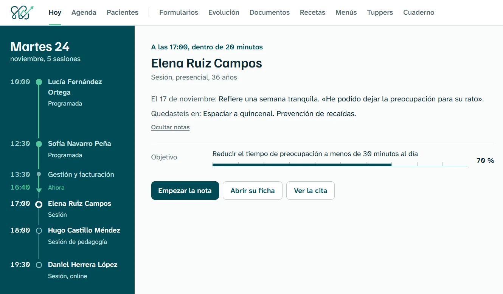
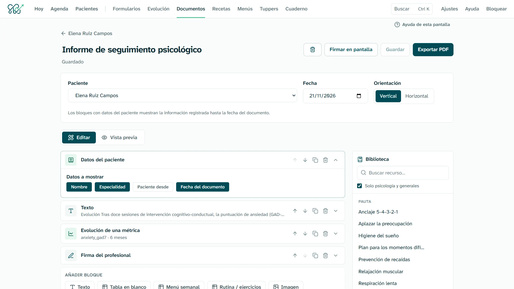
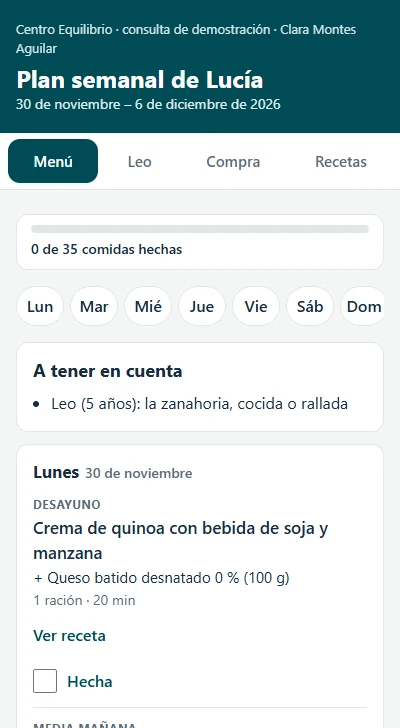

y sigues con la consulta abierta
Elegiste acompañar a personas. No escribir notas a las once de la noche.
YKY es el programa de consulta que se instala en tu ordenador y se adapta a tu forma de trabajar. No al revés.
20 minutos, con datos inventados y sin compromiso.

Esto no sale en la foto de tu consulta
Míralo funcionando. Sin voz, sin prisa y sin dejar tus datos.
Pantallas reales del programa, con personas inventadas. El recorrido completo dura poco más de dos minutos; los cortos, menos de uno.
¿Te ves usándolo? Pedir mi demo
Llevas años afinando tus preguntas. ¿Por qué tienes que usar las de otro?
Un formulario pensado para todo el mundo no es el tuyo. En YKY lo escribes tú y lo ves al momento. Prueba: cambia una pregunta.
Tu formulario
Cuestionario para casa
Lo que viaja
Responde en el móvil y pulsa «Enviar».
Lo que lees tú
Aquí se cifra de verdad, en tu navegador, y nada sale de esta página. En YKY cada envío lleva su propia clave y solo tu ordenador puede abrirlo.
- Preguntas que aparecen según la respuesta anterior.
- Números que se convierten en gráfica solos.
- Tests con su puntuación: PHQ-9, GAD-7, PCL-5 y otros de uso permitido.
- Plantillas de partida para no empezar en blanco.
En esa casa se cocina una vez. Tu pauta no puede exigir cuatro cenas.
Por buena que sea, si obliga a cocinar aparte, dura dos semanas. YKY hace el menú para quien tienes delante y para quien se sienta a su mesa. Quita y pon comensales.
Hay que preparar
Raciones calculadas por YKY en la consulta de demostración. La variante cambia solo la proteína.
Te han contado lo que no le han contado a nadie. Guárdalo como se merece.
Una historia clínica que se escribe rápido, se cierra de verdad y se entiende seis meses después.
¿Sabes en qué ordenador están ahora mismo las historias de tus pacientes?
Con YKY la respuesta cabe en tres palabras: en el tuyo. Haz la prueba, apaga el wifi.
Programa en la nube
Conectado al servidor de otra empresa
Sin conexión. Vuelve a intentarlo más tarde.
YKY
Trabajando en tu ordenador
- Instalado, no alquilado en la nube
- Las historias de tus pacientes no pasan por mis servidores. No tengo.
- Cifrado, no solo guardado
- Toda la base de datos va cifrada (AES-256) y se abre con tu contraseña. También los archivos y las notas de voz.
- Se bloquea solo
- Cuando dejas de usarlo, al suspender el equipo o con una tecla. Sin perder lo que escribías.
- Copias cifradas automáticas
- Al cerrar, en tu USB o donde tú decidas. Si se rompe el portátil, no se rompe tu consulta.
- Pacientes sin límite
- No pagas más por tener más trabajo.
- Si un día te vas, te lo llevas
- Aunque no renueves puedes consultar, exportar y hacer copias. Tus datos no son un rehén.
La responsabilidad sobre los datos sigue siendo tuya: YKY pone las herramientas; la contraseña, las copias y el equipo los cuidas tú.
Lo que cambia de verdad
No hay un programa mejor para todo el mundo. Esto es lo que eliges cuando eliges YKY.
| Lo habitual en la nube | YKY | |
|---|---|---|
| Dónde están las historias | En el servidor del proveedor | En tu ordenador, cifradas |
| Sin internet | Suele dejar de funcionar | Funciona igual |
| Si creces | Muchos cobran por número de pacientes | Pacientes sin límite |
| Formularios | Plantillas comunes | Los escribes tú |
| Si no renuevas | Depende del contrato | Lees, exportas y haces copias |
| Cuando pides ayuda | Un formulario de incidencias | Quien lo ha programado |
| Entrar desde cualquier sitio | Sí | No: solo en tu ordenador |
| Trabajo en equipo | Sí | No: una persona |
«Lo habitual» resume lo que se ve en el sector, no un producto concreto. Cada programa es distinto: pregunta al tuyo.
El informe, en un clic. Y que el domingo vuelva a ser domingo.
Los datos ya están en la ficha. Entonces, ¿por qué los vuelves a escribir? Monta tu informe una vez, por bloques: datos, gráfica, texto, firma. La siguiente vez parte de tu plantilla, con los datos de cada paciente, y sale en PDF con un clic, con tu logo y tus colores.
- Tu membrete, en cada página.
- La gráfica de su evolución, dentro del informe.
- Consentimientos y firma en pantalla.
- El plan en el móvil del paciente, sin apps ni registros.


«Esto que hago yo, tu programa no lo hace.»
Cuéntame cómo lo haces y vemos cómo meterlo.
¿Cuántas veces has pedido un cambio y te han dado un número de incidencia?
Aquí hablas con quien lo programa. Las mejoras se deciden escuchando a quien lo usa cada día, y si necesitas algo muy tuyo, se estudia y se presupuesta antes de empezar. No hay dos consultas iguales. Tu programa tampoco debería serlo.
Vivo a los dos lados de la pantalla
+16 años creando software a medida4 años como técnico superior en Dietética
Soy Rocío Gómez. Durante más de 16 años he construido programas para quien tenía un problema que ningún programa resolvía. Luego me senté al otro lado: la consulta, la persona delante, el reloj.
Y entendí algo que no se ve desde un despacho de informática: lo que agota no es atender, es todo lo demás. Reescribir, buscar, cuadrar, recordar. Y la inquietud de no saber del todo dónde están los datos de quien ha confiado en ti.
YKY nace de juntar los dos mundos: ver la necesidad en la consulta y saber construir la solución.
Lo que YKY no hace
Mejor que lo sepas antes de la demo:
- Solo funciona en Windows. Nada de Mac o tablet por ahora.
- Es para una persona en un ordenador. No comparte agenda entre un equipo.
- Emite recibos, no facturas.
- Sin reserva de cita por internet, videollamada ni inteligencia artificial.
Si algo de esto es imprescindible para ti, hay programas que lo hacen bien. Si lo que buscas es calma, criterio propio y tus datos en casa, hablemos.
Antes de escribirme
¿Es difícil de usar?
Trae dentro una ayuda que responde a tus preguntas y te ilumina el botón que toca. Y la puesta en marcha la hacemos a la vez.
¿Puedo traer mis pacientes?
Sí, desde Excel u otro programa que exporte a CSV.
¿Y si se me rompe el ordenador?
Instalas YKY en otro, te activo la licencia, restauras tu copia y sigues. Por eso las copias se hacen solas al cerrar.
¿Y si olvido la contraseña?
Al crearla recibes una clave de recuperación para imprimir y guardar. No hay puerta trasera: yo tampoco puedo entrar.
¿Puedo probarlo?
Sí. Incluye una consulta de ejemplo con pacientes inventados que puedes tocar sin miedo durante 15 días.
¿Qué tests trae?
PHQ-9, GAD-7, PCL-5, PC-PTSD-5 y la escala de Rosenberg, con su puntuación. Solo los que tienen permiso de uso. Puedes crear los tuyos, con subescalas, ítems inversos y avisos.
¿Una nota cerrada se puede cambiar?
No. Al cerrarla queda fija y después solo se añaden aclaraciones con su fecha.
¿Cómo funciona con menores y parejas?
Cada ficha guarda a sus tutores, su pareja u otros profesionales, con sus consentimientos. Si es menor y falta registrar el de un tutor, te avisa. El aviso es orientativo: el criterio es tuyo.
¿La firma en pantalla vale para un consentimiento?
Es una firma electrónica simple: guarda el trazo, la fecha y una huella del documento. Los textos incluidos son orientativos; revísalos con tu colegio o asesoría.
¿Lo ha hecho alguien de psicología?
No. Lo programo yo, técnico superior en Dietética y con más de 16 años de software a medida. La parte de psicología la quiero afinar con quien la ejerce: si ves algo que no encaja, me ayuda saberlo.
¿Cuánto cuesta?
Es una licencia anual según lo que uses, con pacientes ilimitados. Te doy el precio exacto en la demo, sin letra pequeña.
Cómo empezamos
- Me cuentas cómo trabajasCinco minutos. Qué te quita tiempo y qué no quieres cambiar.
- Te enseño solo esoQuince minutos por videollamada, con personas inventadas.
- Lo pruebas quince díasEn tu ordenador, con una consulta de ejemplo que puedes romper.
- Si te encaja, lo montamos a la vezTu contraseña, tu membrete, tus copias y tu primera persona.
Mañana, a las 22:47, podrías estar en el sofá
Cuéntame cómo es tu consulta. Te enseño YKY en 20 minutos por videollamada, solo lo que a ti te sirve.
Esta web no guarda lo que escribes: prepara un mensaje de WhatsApp y tú decides si lo envías.